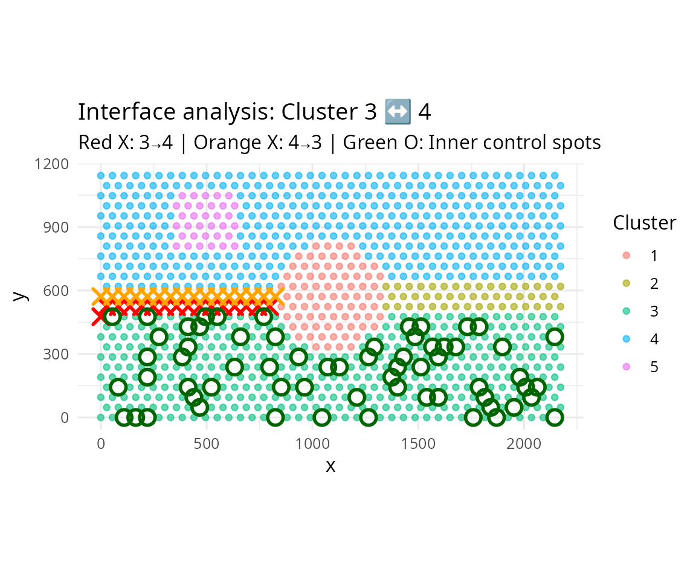
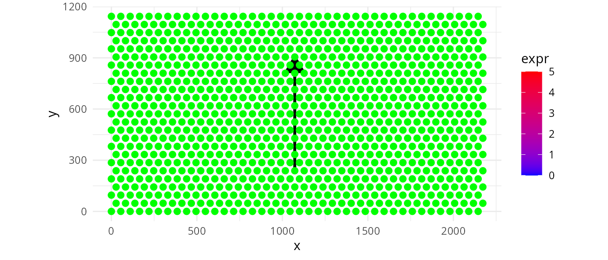
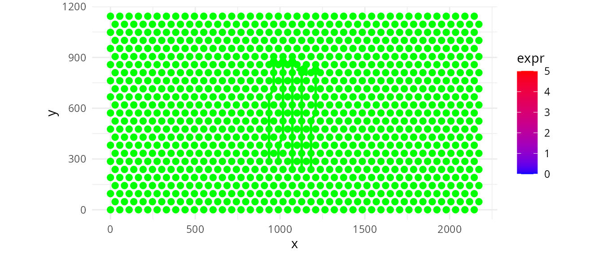
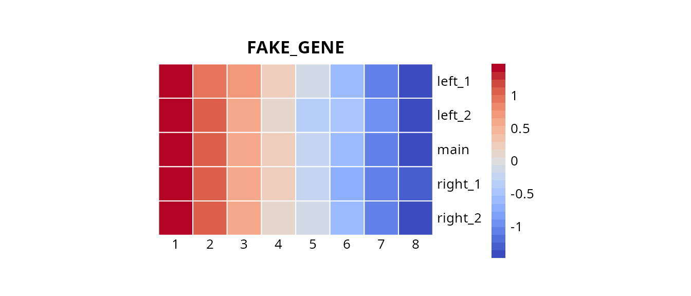

Battlefield
Jean-Philippe Villemin
Institut de Recherche en Cancérologie de Montpellier, Inserm, Montpellier, Francejean-philippe.villemin@inserm.fr
01/10/2026
Source:vignettes/Battlefield-Main.Rmd
Battlefield-Main.RmdAbstract
Battlefield is a Swiss-army toolkit
designed to define and extract spatial spots from specific regions
in spatial transcriptomics data. It provides
low-level, modular utilities to delineate spatial regions of
interest, including interfaces between clusters,
intra-cluster layers, and inter-cluster
trajectories. These utilities are intended to
be reused and composed within higher-level analytical workflows
and packages. Battlefield supports
sequencing-based spatial transcriptomics platforms such as
10x Genomics Visium, across multiple resolutions,
including Visium HD (binned). Battlefield package
version: 0.99.1
library(Battlefield)
library(SpatialExperiment)
library(ggplot2)
library(dplyr)
library(tidyr)
library(pheatmap)
library(pals)
library(grid)
library(patchwork)Introduction
Battlefield is a Swiss-army toolkit designed to
define and extract spatial spots from specific regions in spatial
transcriptomics data. It provides low-level, modular
utilities to delineate spatial regions of interest,
including interfaces between clusters,
intra-cluster layers, and
inter-cluster trajectories. These utilities
are intended to be reused and composed within higher-level
analytical workflows and packages. Battlefield
supports sequencing-based spatial transcriptomics platforms such
as
10x Genomics Visium, across multiple resolutions,
including
Visium HD (binned).
What is it for?
Battlefield provides four core functionalities to define
and extract spatial transcriptomics spots from specific tissue regions,
enabling the study of spatial organization under different biological
contexts:
Interfaces between clusters — identify and analyze boundary regions where distinct tissue or cell populations interact.
Intra-cluster layers — characterize spatial layers or gradients within a single cluster.
Inter-cluster trajectories — model spatial transitions across multiple clusters.
Cluster neighbourhood — report the cluster composition of a spatial neighborhood defined by k nearest spots, constrained by a distance threshold.
Starting point
We start from a SpatialExperiment object that contains (i) spatial coordinates for each spot and (ii) a precomputed clustering stored in colData(). Battlefield operates on a simple spot-level table, so we first export a data.frame with four columns: * spot_id: spot/barcode identifier (colnames(spe)) * x, y: spatial coordinates (spatialCoords(spe)) * cluster: cluster label provided by the user (a column in colData(spe)) Because the cluster annotation can have different names depending on the workflow (e.g., cluster, seurat_clusters, BayesSpace, etc.), the user can specify which colData() column should be used.
Interfaces between clusters
Battlefield allows you to identify and extract spatial
interfaces between clusters (also known as
invasive margins, or niche boundaries). Here
we demonstrate how to:
- Detect interfaces between two specific clusters (inside/outside/both)
- Identify multi-interface spots (belonging to several interfaces)
- Select all interfaces at once
- Detect associated inner control spots
We load a simulated Visium dataset (hexagonal grid) to illustrate the different functionalities.
Real life example
# Load VisiumHD data at 16 µm resolution
data("visiumHD_16um_simulated_spe")
df <- data.frame(
spot_id = colnames(visiumHD_16um_simulated_spe),
x = spatialCoords(visiumHD_16um_simulated_spe)[, 1],
y = spatialCoords(visiumHD_16um_simulated_spe)[, 2],
cluster = colData(visiumHD_16um_simulated_spe)$cluster
)
# Get all directed cluster pairs
pairs <- directed_cluster_interface_pairs(df$cluster)
head(pairs)## cluster interface directed_pair
## 1 4 3 4-3
## 2 5 3 5-3
## 3 1 3 1-3
## 4 2 3 2-3
## 5 3 4 3-4
## 6 5 4 5-4
# Detect grid type and get parameters
res <- detect_grid_type(df, verbose = FALSE)
params <- get_neighborhood_params(df, square_connectivity = 4)## ---- Grid type detection ----## Estimated grid step: 400## Median distance ratio: 1.414## Detected grid type: square## --------------------------------## ---- Neighborhood parameters ----## grid_type: square## connectivity: 4## radius: 404## k: 16## comment: Visium HD: 4-connectivity (square grid)## --------------------------------
# Select specific interface: cluster 5 → 4
border_in <- select_border_spots(df, cluster = 5, interface = 4, k = 4)
knitr::kable(head(border_in))| spot_id | x | y | directed_pair | undirected_pair | cluster | interface | is_border | is_border_multiple | other_adjacent_borders | mode | |
|---|---|---|---|---|---|---|---|---|---|---|---|
| 168 | bin16_687 | 2400 | 6800 | 5-4 | 4-5 / 5-4 | 5 | 4 | TRUE | FALSE | NA | inner |
| 170 | bin16_767 | 2400 | 7600 | 5-4 | 4-5 / 5-4 | 5 | 4 | TRUE | FALSE | NA | inner |
| 172 | bin16_847 | 2400 | 8400 | 5-4 | 4-5 / 5-4 | 5 | 4 | TRUE | FALSE | NA | inner |
| 193 | bin16_688 | 2800 | 6800 | 5-4 | 4-5 / 5-4 | 5 | 4 | TRUE | FALSE | NA | inner |
| 194 | bin16_728 | 2800 | 7200 | 5-4 | 4-5 / 5-4 | 5 | 4 | TRUE | FALSE | NA | inner |
| 196 | bin16_808 | 2800 | 8000 | 5-4 | 4-5 / 5-4 | 5 | 4 | TRUE | FALSE | NA | inner |
df_in <- df |>
mutate(is_border = spot_id %in% border_in$spot_id) |>
left_join(border_in |> select(spot_id, is_border_multiple),
by = "spot_id") |>
mutate(is_border_multiple = coalesce(is_border_multiple, FALSE))
# Plot interface 5 → 4
p_in <- ggplot(df_in, aes(x, y, color = cluster)) +
geom_point(size = 1) +
geom_point(data = subset(df_in, is_border & !is_border_multiple),
color = "black", size = 2) +
geom_point(data = subset(df_in, is_border & is_border_multiple),
color = "red", size = 2) +
coord_equal() +
theme_minimal() +
labs(title = "Cluster: 5 → 4")
# Select reverse interface: cluster 4 → 5
border_out <- select_border_spots(df, cluster = 4, interface = 5, k = 4)
df_out <- df |>
mutate(is_border = spot_id %in% border_out$spot_id) |>
left_join(border_out |> select(spot_id, is_border_multiple),
by = "spot_id") |>
mutate(is_border_multiple = coalesce(is_border_multiple, FALSE))
# Plot interface 4 → 5
p_out <- ggplot(df_out, aes(x, y, color = cluster)) +
geom_point(size = 1) +
geom_point(data = subset(df_out, is_border & !is_border_multiple),
color = "black", size = 2) +
geom_point(data = subset(df_out, is_border & is_border_multiple),
color = "red", size = 2) +
coord_equal() +
theme_minimal() +
labs(title = "Interface: 4 → 5")
# Combine both interfaces side by side
p_in | p_out
All interfaces overview
# Build all borders for all directed pairs
big_border_df <- build_all_borders(df, k = 4, pairs = pairs)
# Create undirected pair visualization
df_all <- df |>
left_join(big_border_df |> select(spot_id, undirected_pair, is_border_multiple),
by = "spot_id") |>
mutate(is_border = !is.na(undirected_pair),
is_border_multiple = coalesce(is_border_multiple, FALSE))
# Plot all interfaces colored by undirected pair
ggplot(df_all, aes(x, y)) +
geom_point(data = subset(df_all, !is_border),
color = "gray", size = 1) +
geom_point(data = subset(df_all, is_border & is_border_multiple),
aes(color = undirected_pair), size = 2, alpha = 0.4) +
geom_point(data = subset(df_all, is_border & !is_border_multiple),
aes(color = undirected_pair), size = 2) +
coord_equal() +
theme_minimal() +
labs(title = "All cluster interfaces (undirected pairs)",
subtitle = "Light color: multi-interface spots | Full color: pure interface")
Standard Visium Simulated
# Load standard Visium data at lower resolution
data("visium_simulated_spe")
df_visium <- data.frame(
spot_id = colnames(visium_simulated_spe),
x = spatialCoords(visium_simulated_spe)[, 1],
y = spatialCoords(visium_simulated_spe)[, 2],
cluster = colData(visium_simulated_spe)$cluster
)
# Get all pairs and detect grid
pairs_visium <- directed_cluster_interface_pairs(df_visium$cluster)
params_visium <- get_neighborhood_params(df_visium, verbose = FALSE)
# Define cluster pair of interest
cluster_A <- 3
cluster_B <- 4
# Select border spots for both directions
border_A_to_B <- subset(
build_all_borders(df_visium, k = 6, pairs = pairs_visium),
cluster == cluster_A & interface == cluster_B
)
border_B_to_A <- subset(
build_all_borders(df_visium, k = 6, pairs = pairs_visium),
cluster == cluster_B & interface == cluster_A
)
# Build all borders to identify inner spots
all_borders_visium <- build_all_borders(df_visium, k = 6, pairs = pairs_visium)
# Select inner spots for cluster A
set.seed(42)
inner_A <- select_core_spots(df_visium, all_borders_visium,
cluster = cluster_A, interface = cluster_B,
mode = "both")
# Create visualization dataframe with spot classification
df_final <- df_visium |>
mutate(spot_type = "background") |>
mutate(spot_type = ifelse(spot_id %in% border_A_to_B$spot_id,
"border_A_to_B", spot_type)) |>
mutate(spot_type = ifelse(spot_id %in% border_B_to_A$spot_id,
"border_B_to_A", spot_type)) |>
mutate(spot_type = ifelse(spot_id %in% inner_A$spot_id,
"inner_A", spot_type)) |>
as.data.frame()
# Plot: clusters with borders and inner control spots
ggplot(df_final, aes(x, y, color = cluster)) +
geom_point(data = subset(df_final, spot_type == "background"),
size = 1.5, alpha = 0.6) +
geom_point(data = subset(df_final, spot_type == "border_A_to_B"),
color = "red", size = 3.5, shape = 4, stroke = 1.5) +
geom_point(data = subset(df_final, spot_type == "border_B_to_A"),
color = "orange", size = 3.5, shape = 4, stroke = 1.5) +
geom_point(data = subset(df_final, spot_type == "inner_A"),
aes(color = NULL),
color = "darkgreen", size = 3.5, shape = 1, stroke = 1.5) +
coord_equal() +
theme_minimal(base_size = 12) +
labs(
title = paste0("Interface analysis: Cluster ", cluster_A, " ↔ ", cluster_B),
subtitle = paste0("Red X: ", cluster_A, "→", cluster_B, " | Orange X: ", cluster_B, "→", cluster_A, " | Green O: Inner control spots"),
x = "x", y = "y", color = "Cluster"
)
Inter-cluster trajectories
Here
## [1] "visium_simulated_spe"## DataFrame with 6 rows and 3 columns
## barcode_id cluster sample_id
## <character> <factor> <character>
## SPOT0001 SPOT0001 3 sample01
## SPOT0002 SPOT0002 3 sample01
## SPOT0003 SPOT0003 3 sample01
## SPOT0004 SPOT0004 3 sample01
## SPOT0005 SPOT0005 3 sample01
## SPOT0006 SPOT0006 3 sample01
df <- data.frame(
spot_id = colnames(visium_simulated_spe),
x = spatialCoords(visium_simulated_spe)[, 1],
y = spatialCoords(visium_simulated_spe)[, 2],
cluster = colData(visium_simulated_spe)$cluster
)
expr <- as.numeric(assay(visium_simulated_spe, "counts")["FAKE_GENE", ])
test <- cbind(as.data.frame(colData(visium_simulated_spe)), df[, c("x", "y"), drop = FALSE])
test$expr <- expr
start_cluster <- "3"
end_cluster <- "4"
top_n <- 8
centroids <- compute_centroids(df)
A <- centroids[centroids$cluster == start_cluster, c("x","y")]
B <- centroids[centroids$cluster == end_cluster, c("x","y")]
(res <- build_one_trajectory(df, A, B, top_n = top_n, max_dist = NULL))## spot_id x y cluster dist_to_seg pos_on_seg trajectory_id
## 1 SPOT0220 1072.5 238.1570 3 11.5795728 0.00275319 main
## 2 SPOT0300 1072.5 333.4198 1 8.6442774 0.14803792 main
## 3 SPOT0380 1072.5 428.6826 1 5.7089820 0.29332266 main
## 4 SPOT0460 1072.5 523.9454 1 2.7736866 0.43860739 main
## 5 SPOT0540 1072.5 619.2082 1 0.1616088 0.58389212 main
## 6 SPOT0620 1072.5 714.4710 1 3.0969042 0.72917686 main
## 7 SPOT0700 1072.5 809.7338 1 6.0321996 0.87446159 main
## 8 SPOT0780 1072.5 904.9965 4 15.7447575 1.00000000 main
ggplot(test, aes(x, y)) +
geom_point(aes(color = expr),size = 1.6, alpha = 0.85) +
scale_color_gradient(
low = "blue",
high = "red"
) +
geom_path(
data = res,
aes(x = x, y = y),
color = "green", linewidth = 1.1
) +
geom_path(
data = res,
aes(x = x, y = y),
color = "black", linewidth = 1.1,
arrow = grid::arrow(type = "closed",
length = grid::unit(5, "mm"))
) +
geom_point(data = res$selected, aes(x, y),
inherit.aes = FALSE, size = 2.2, color="green") +
coord_equal() +
theme_minimal()
(out <- build_similar_trajectories(df, A, B, top_n = top_n, n_extra = 2, side = "both"))## spot_id x y cluster dist_to_seg pos_on_seg trajectory_id
## 1 SPOT0220 1072.5 238.1570 3 11.5795728 0.002753190 main
## 2 SPOT0300 1072.5 333.4198 1 8.6442774 0.148037923 main
## 3 SPOT0380 1072.5 428.6826 1 5.7089820 0.293322657 main
## 4 SPOT0460 1072.5 523.9454 1 2.7736866 0.438607390 main
## 5 SPOT0540 1072.5 619.2082 1 0.1616088 0.583892123 main
## 6 SPOT0620 1072.5 714.4710 1 3.0969042 0.729176857 main
## 7 SPOT0700 1072.5 809.7338 1 6.0321996 0.874461590 main
## 8 SPOT0780 1072.5 904.9965 4 15.7447575 1.000000000 main
## 9 SPOT0259 990.0 285.7884 3 9.0989022 0.071516864 left_1
## 10 SPOT0339 990.0 381.0512 1 12.0341976 0.216801597 left_1
## 11 SPOT0379 1017.5 428.6826 1 13.9850971 0.290736861 left_1
## 12 SPOT0459 1017.5 523.9454 1 11.0498017 0.436021595 left_1
## 13 SPOT0539 1017.5 619.2082 1 8.1145063 0.581306328 left_1
## 14 SPOT0619 1017.5 714.4710 1 5.1792109 0.726591062 left_1
## 15 SPOT0699 1017.5 809.7338 1 2.2439155 0.871875795 left_1
## 16 SPOT0779 1017.5 904.9965 4 11.2679986 1.000000000 left_1
## 17 SPOT0258 935.0 285.7884 3 0.8227870 0.068931069 left_2
## 18 SPOT0338 935.0 381.0512 1 3.7580824 0.214215802 left_2
## 19 SPOT0418 935.0 476.3140 1 6.6933778 0.359500535 left_2
## 20 SPOT0498 935.0 571.5768 1 9.6286732 0.504785269 left_2
## 21 SPOT0578 935.0 666.8396 1 12.5639686 0.650070002 left_2
## 22 SPOT0618 962.5 714.4710 1 13.4553261 0.724005266 left_2
## 23 SPOT0698 962.5 809.7338 4 10.5200307 0.869290000 left_2
## 24 SPOT0778 962.5 904.9965 4 12.1971444 1.000000000 left_2
## 25 SPOT0221 1127.5 238.1570 3 3.3034576 0.005338985 right_1
## 26 SPOT0301 1127.5 333.4198 1 0.3681622 0.150623718 right_1
## 27 SPOT0381 1127.5 428.6826 1 2.5671332 0.295908452 right_1
## 28 SPOT0461 1127.5 523.9454 1 5.5024286 0.441193185 right_1
## 29 SPOT0541 1127.5 619.2082 1 8.4377240 0.586477918 right_1
## 30 SPOT0621 1127.5 714.4710 1 11.3730194 0.731762652 right_1
## 31 SPOT0701 1127.5 809.7338 1 14.3083148 0.877047385 right_1
## 32 SPOT0742 1155.0 857.3651 4 11.7109799 0.950982649 right_1
## 33 SPOT0222 1182.5 238.1570 3 4.9726575 0.007924780 right_2
## 34 SPOT0302 1182.5 333.4198 1 7.9079529 0.153209513 right_2
## 35 SPOT0382 1182.5 428.6826 1 10.8432484 0.298494247 right_2
## 36 SPOT0462 1182.5 523.9454 1 13.7785438 0.443778980 right_2
## 37 SPOT0503 1210.0 571.5768 1 12.2407510 0.517714244 right_2
## 38 SPOT0583 1210.0 666.8396 1 9.3054555 0.662998978 right_2
## 39 SPOT0663 1210.0 762.1024 1 6.3701601 0.808283711 right_2
## 40 SPOT0743 1210.0 857.3651 4 3.4348647 0.953568445 right_2
## offset
## 1 0.00
## 2 0.00
## 3 0.00
## 4 0.00
## 5 0.00
## 6 0.00
## 7 0.00
## 8 0.00
## 9 63.25
## 10 63.25
## 11 63.25
## 12 63.25
## 13 63.25
## 14 63.25
## 15 63.25
## 16 63.25
## 17 126.50
## 18 126.50
## 19 126.50
## 20 126.50
## 21 126.50
## 22 126.50
## 23 126.50
## 24 126.50
## 25 -63.25
## 26 -63.25
## 27 -63.25
## 28 -63.25
## 29 -63.25
## 30 -63.25
## 31 -63.25
## 32 -63.25
## 33 -126.50
## 34 -126.50
## 35 -126.50
## 36 -126.50
## 37 -126.50
## 38 -126.50
## 39 -126.50
## 40 -126.50
ggplot(test, aes(x, y)) +
geom_point(aes(color = expr),size = 1.6, alpha = 0.85) +
scale_color_gradient(
low = "blue",
high = "red"
) +
geom_path(data=out, aes(x=x, y=y, group=trajectory_id),
inherit.aes = FALSE, color="green",linewidth=1,
arrow = grid::arrow(type = "closed", length = grid::unit(3, "mm"))) +
geom_point(data = out$lines, aes(x, y),
inherit.aes = FALSE, size = 2.2, color="green") +
coord_equal() +
theme_minimal() 
meta <- out|>
transmute(
spot_id = as.character(spot_id),
trajectory = as.character(trajectory_id),
progress = as.numeric(pos_on_seg)
) |>
group_by(trajectory) |>
arrange(progress, .by_group = TRUE) |>
mutate(
index = seq_len(n()) # <- index 1..length ordered according to t
) |>
ungroup()
gene <- c("FAKE_GENE")
expr <- assay(visium_simulated_spe, "counts")[gene, meta$spot_id]
meta$expr <- expr
mat <- meta |>
select(trajectory, index, expr) |>
tidyr::pivot_wider(names_from = index, values_from = expr) |>
as.data.frame()
rownames(mat) <- mat$trajectory
mat$trajectory <- NULL
pheatmap(
mat,
cluster_rows = FALSE,
cluster_cols = FALSE,
border_color = "white",
main = gene,angle_col=0,
col=pals::coolwarm(), scale="row",
cellwidth=25, cellheight=25 , na_col = "grey90"
)
Session Information
## R Under development (unstable) (2025-12-18 r89199)
## Platform: x86_64-pc-linux-gnu
## Running under: Ubuntu 24.04.3 LTS
##
## Matrix products: default
## BLAS: /usr/lib/x86_64-linux-gnu/openblas-pthread/libblas.so.3
## LAPACK: /usr/lib/x86_64-linux-gnu/openblas-pthread/libopenblasp-r0.3.26.so; LAPACK version 3.12.0
##
## locale:
## [1] LC_CTYPE=en_US.UTF-8 LC_NUMERIC=C
## [3] LC_TIME=fr_FR.UTF-8 LC_COLLATE=en_US.UTF-8
## [5] LC_MONETARY=fr_FR.UTF-8 LC_MESSAGES=en_US.UTF-8
## [7] LC_PAPER=fr_FR.UTF-8 LC_NAME=C
## [9] LC_ADDRESS=C LC_TELEPHONE=C
## [11] LC_MEASUREMENT=fr_FR.UTF-8 LC_IDENTIFICATION=C
##
## time zone: Europe/Paris
## tzcode source: system (glibc)
##
## attached base packages:
## [1] grid stats4 stats graphics grDevices utils datasets
## [8] methods base
##
## other attached packages:
## [1] patchwork_1.3.2 pals_1.10
## [3] pheatmap_1.0.13 tidyr_1.3.2
## [5] dplyr_1.1.4 ggplot2_4.0.1
## [7] SpatialExperiment_1.21.0 SingleCellExperiment_1.33.0
## [9] SummarizedExperiment_1.41.0 Biobase_2.71.0
## [11] GenomicRanges_1.63.1 Seqinfo_1.1.0
## [13] IRanges_2.45.0 S4Vectors_0.49.0
## [15] BiocGenerics_0.57.0 generics_0.1.4
## [17] MatrixGenerics_1.23.0 matrixStats_1.5.0
## [19] Battlefield_0.99.01
##
## loaded via a namespace (and not attached):
## [1] gtable_0.3.6 rjson_0.2.23 xfun_0.55
## [4] bslib_0.9.0 htmlwidgets_1.6.4 lattice_0.22-7
## [7] vctrs_0.6.5 tools_4.6.0 tibble_3.3.0
## [10] pkgconfig_2.0.3 Matrix_1.7-4 RColorBrewer_1.1-3
## [13] S7_0.2.1 desc_1.4.3 lifecycle_1.0.5
## [16] compiler_4.6.0 farver_2.1.2 textshaping_1.0.4
## [19] mapproj_1.2.12 maps_3.4.3 htmltools_0.5.9
## [22] sass_0.4.10 yaml_2.3.12 pillar_1.11.1
## [25] pkgdown_2.2.0 jquerylib_0.1.4 DelayedArray_0.37.0
## [28] cachem_1.1.0 magick_2.9.0 abind_1.4-8
## [31] tidyselect_1.2.1 digest_0.6.39 purrr_1.2.1
## [34] labeling_0.4.3 fastmap_1.2.0 colorspace_2.1-2
## [37] cli_3.6.5 SparseArray_1.11.10 magrittr_2.0.4
## [40] S4Arrays_1.11.1 dichromat_2.0-0.1 withr_3.0.2
## [43] scales_1.4.0 rmarkdown_2.30 XVector_0.51.0
## [46] RANN_2.6.2 ragg_1.5.0 evaluate_1.0.5
## [49] knitr_1.50 rlang_1.1.7 Rcpp_1.1.1
## [52] glue_1.8.0 jsonlite_2.0.0 R6_2.6.1
## [55] systemfonts_1.3.1 fs_1.6.6